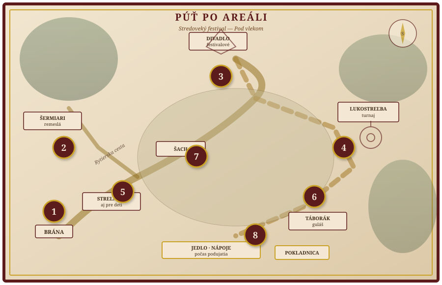

O festivale
Vitajte na stránke stredovekého festivalu v Stropkove. Čaká vás divadlo, lukostrelecký turnaj, strelnica (aj pre deti), šermiári, rytierska cesta, festivalový šach, táborák, guláš a jedlo s nápojmi počas dňa. Tu nájdete harmonogram, mapu úloh a mapu areálu v rekreačnom stredisku Pod vlekom. Môžete si nastaviť meno alebo alias v profile (uložené len v tomto prehliadači). Na mieste sa za občerstvenie a vybrané služby platí žetónmi z jednej centrálnej pokladnice, výhradne hotovosťou. Verejná stránka Prihlášky a súťaže — záujem o workshopy a súťažné kolá; vstupenky a platby sú zvlášť v sekcii nižšie.
Harmonogram
Živý prehľad
Pripravujem prehľad…
| Čas | Program |
|---|
Areál — Pod vlekom
Festival sa koná v rekreačnom areáli Pod vlekom pri Stropkove. Presné miesto vstupu, parkovanie a značenie doplní organizátor.
Adresa: Pod vlekom 1734, 091 01 Stropkov · Otvoriť v Google Maps
Počasie: SHMÚ — predpoveď (Slovensko) · yr.no — Stropkov (vonku v prírode počítajte s vetrom a dažďom — plášť, voda).
Mapa je orientačná. Presné miesto vstupu a parkovania oznámi organizátor pred akciou.
Mapa púte — úlohy v areáli
Program zahŕňa festivalové divadlo, lukostrelecký turnaj, strelnicu (aj detskú), šermiárov, rytiersku cestu, festivalový šach, táborák s gulášom, jedlo a nápoje počas celého dňa. Mapa je ilustrácia areálu; čísla 1–8 označujú stanice púte (úlohy alebo pečiatky).

Úlohy podľa mapy (čísla 1–8)
Zodpovedajú číslam na mape. Presné zadania a pravidlá oznámi organizátor na mieste alebo v letáku.
- Rytierska cesta — štart pri bráne; úvodná pečiatka alebo úloha na celú trasu.
- Šermiári — stanica pri ukážkach / škôlke šermu.
- Festivalové divadlo — úloha pri scéne (otázka k predstaveniu, program).
- Lukostrelecký turnaj — súťažné kolá; divácka úloha alebo registrácia.
- Strelnica — aj detské stanovisko; bezpečnostné pravidlá a odmena za zásah.
- Táborák a guláš — večerná zóna; úloha pri ohni alebo pri výdaji gulášu.
- Festivalový šach + jedlo a nápoje — stred areálu; občerstvenie počas celého podujatia.
- Pokladnica žetónov — výmena hotovosti za žetóny; záverečná pečiatka alebo informácia k platbám.
Váš profil
Zadajte svoje meno alebo stredoveký alias — zobrazí sa pozdrav v baneri a skratka v hlavičke. Údaje sa ukladajú len lokálne v prehliadači (nie na serveri).
Často kladené otázky
Stručné odpovede na bežné otázky. Podrobnosti vždy platia podľa oznámenia organizátora.
Kde presne je vstup a kde parkujem?
Orientačná adresa je Pod vlekom 1734. Presný vchod, parkovanie a prípadné parkovné zverejní organizátor pred akciou (tu na stránke alebo na sociálnych sieťach).
Môžem platiť kartou alebo len žetónmi?
Žetóny sú len za hotovosť na jednej centrálnej pokladnici. Pri stánkoch sa platí žetónmi. Vstupenky alebo rezervácie aktivít môžete mať riešené online — podľa sekcie Vstupenky na tejto stránke.
Sú psy alebo iné zvieratá vítané?
Závisí od pravidiel areálu a organizátora. Aktuálne pravidlá pre psov a iné zvieratá budú zverejnené pred akciou.
Čo keď príde zlá počasie?
Festival je väčšinou vonku — sledujte predpoveď (odkazy pri mape). Drobný dážď nemusí znamenať zrušenie; pri nepriazni organizátor oznámi zmeny.
Je areál vhodný pre kočík alebo invalidný vozík?
Terén môže byť nerovný. Informácie o bezbariérovom prístupe a WC zverejní organizátor po obhliadke areálu.
Vstupenky a rezervácie
Vstup na festival a miesto na vybrané aktivity s obmedzenou kapacitou si môžete zabezpečiť online. Platba prebehne na zabezpečenej stránke platobnej služby alebo v obchode organizátora.
Vstupenky
Online predaj podľa aktuálnej ponuky organizátora. Po kliknutí dokončíte objednávku na platobnej stránke.
Predpredaj / denný vstup
Výber vstupu podľa ponuky (predpredaj, dospelý, dieťa a pod.).
Kúpiť vstupenku onlineRezervácie na aktivity
Samostatné odkazy podľa aktivity. Kapacity a ceny určuje organizátor. Verejné prihlášky (formulár na webe) sú na stránke Prihlášky a súťaže — nezávislé od online platby vstupu.
Lukostrelecký turnaj
Rezervácia alebo platba za miesto v turnaji — podľa ponuky.
Rezervovať / zaplatiť — turnajŠerm — workshop
Kratší workshop podľa kapacity a časového harmonogramu.
Rezervovať / zaplatiť — šermDetský program
Registrácia na program s obmedzeným počtom miest.
Rezervovať / zaplatiť — detský programRemeselný workshop
Napríklad keramika, tkanie alebo iné remeslo — podľa programu ročníka.
Rezervovať / zaplatiť — remesloŽetóny
Na jedlo, nápoje a vybrané aktivity na mieste platíte žetónmi. Žetóny sa nekupujú online — výhradne jedna centrálna pokladnica v areáli, platba hotovosťou (žiadna mobilná apka ani digitálna peňaženka).
Kde a ako
- Jedno označené miesto výmeny hotovosti za žetóny (na mape a pri vchode).
- Ceny balíkov žetónov budú vyznačené pri pokladnici a v letáku.
- Na stánkoch platíte žetónmi — bez priamej hotovosti pri pulte, jednoduchší výdavok.